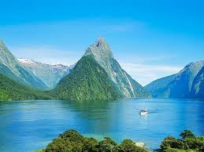
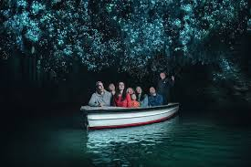
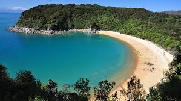

MILFORD SOUND:  Milford Sound is a fiord in the southwest of New Zealand’s South Island. It’s known for towering Mitre Peak, plus rainforests and waterfalls like Stirling and Bowen falls, which plummet down its sheer sides. The fiord is home to fur seal colonies, penguins and dolphins. Milford Discovery Centre and Underwater Observatory offers views of rare black coral and other marine life. Boat tours are a popular way to explore.
MOUNT COOK:
 Aoraki / Mount Cook is the highest mountain in New Zealand. Its height since 2014 is listed as 3,724 metres (12,218 feet), down from 3,764 m (12,349 ft) before December 1991, due to a rockslide and subsequent erosion.[2] It lies in the Southern Alps, the mountain range which runs the length of the South Island. A popular tourist destination,[3] it is also a favourite challenge for mountain climbers. Aoraki / Mount Cook consists of three summits, from South to North the Low Peak (3,593 m or 11,788 ft), Middle Peak (3,717 m or 12,195 ft) and High Peak. The summits lie slightly south and east of the main divide of the Southern Alps, with the Tasman Glacier to the east and the Hooker Glacier to the southwest
Aoraki / Mount Cook is the highest mountain in New Zealand. Its height since 2014 is listed as 3,724 metres (12,218 feet), down from 3,764 m (12,349 ft) before December 1991, due to a rockslide and subsequent erosion.[2] It lies in the Southern Alps, the mountain range which runs the length of the South Island. A popular tourist destination,[3] it is also a favourite challenge for mountain climbers. Aoraki / Mount Cook consists of three summits, from South to North the Low Peak (3,593 m or 11,788 ft), Middle Peak (3,717 m or 12,195 ft) and High Peak. The summits lie slightly south and east of the main divide of the Southern Alps, with the Tasman Glacier to the east and the Hooker Glacier to the southwest
WAITOMO:  Waitomo is a village on the North Island of New Zealand. It’s known for its extensive underground cave systems. Thousands of glow-worms light up the Glowworm Caves. The vast Ruakuri Cave features waterfalls and limestone formations. West, Mangapohue Natural Bridge is a high limestone arch over Mangapohue Stream. Northeast of the village, Otorohanga Kiwi House shelters several species of the rare native kiwi bird.
BAY OF ISLANDS:
 The Bay of Islands is a New Zealand enclave encompassing more than 140 subtropical islands next to the country's North Island. It’s known for its undeveloped beaches, big-game fishing and Maori cultural artefacts. It's also home to the 19th-century whaling port of Russell, whose waterfront promenade is lined with remnants from its days as the country’s first colonial capital.
The Bay of Islands is a New Zealand enclave encompassing more than 140 subtropical islands next to the country's North Island. It’s known for its undeveloped beaches, big-game fishing and Maori cultural artefacts. It's also home to the 19th-century whaling port of Russell, whose waterfront promenade is lined with remnants from its days as the country’s first colonial capital.
ABEL TASMAN NATIONAL PARK:  Abel Tasman National Park is a wilderness reserve at the north end of New Zealand’s South Island. It’s known for the Abel Tasman Coast Track, a long trail winding over beaches and across ridges between Marahau in the south and Wainui in the north. The headland at Separation Point is home to New Zealand fur seal colonies. Little blue penguins, bottlenose dolphins and seals inhabit the Tonga Island Marine Reserve.
NEW ZEALAND WEATHER